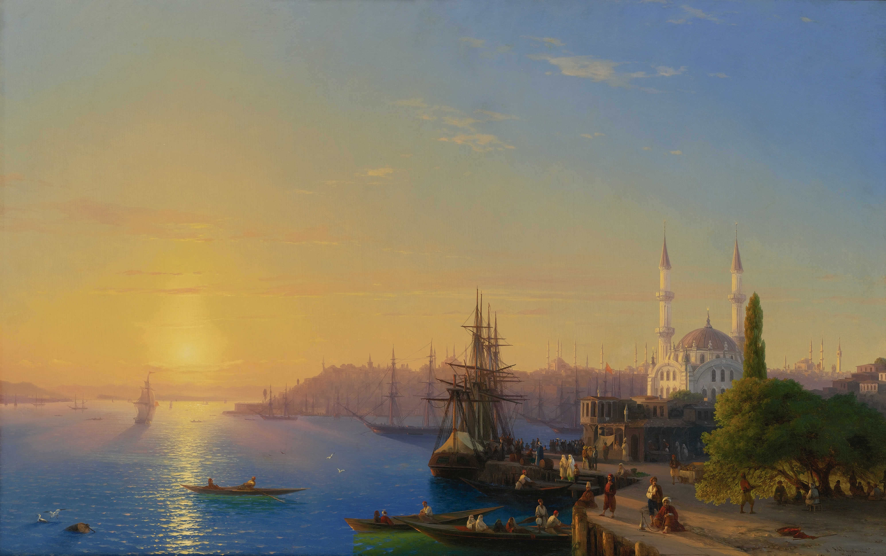

Coastal Essays
Sequenced landscapes, weather studies, and long horizon observations.
Artist and photographer
Elian Vale creates large-format photographic essays shaped by archival research, travel journals, and the slow observation of changing light.

Working between photography, print, and installation, Elian frames the sea as a site of memory rather than spectacle. Each body of work begins with field notes and ends as a sequence of images arranged for rhythm, pause, and material detail.
Featured Gallery
Project Categories
Sequenced landscapes, weather studies, and long horizon observations.
Environmental portraits for artists, makers, and independent publications.
Limited pigment prints, portfolio boxes, and exhibition-ready framed works.
Selected Works
Contact
Share a brief note about the project, preferred timeline, and intended use. Studio replies are sent within three working days.
studio@example.com